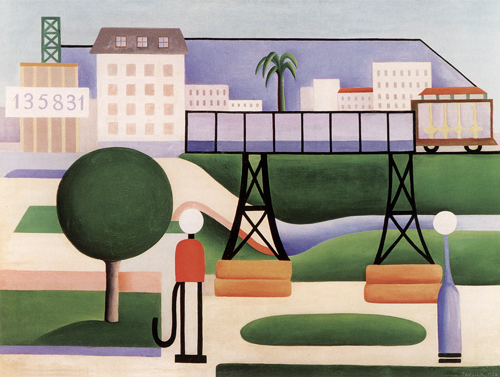
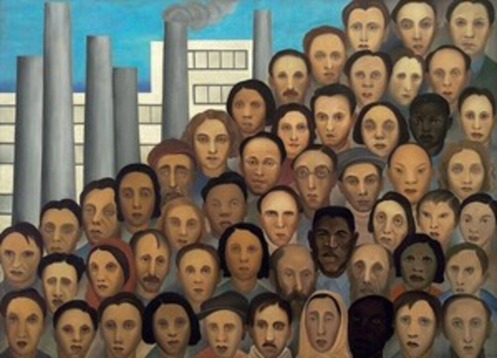
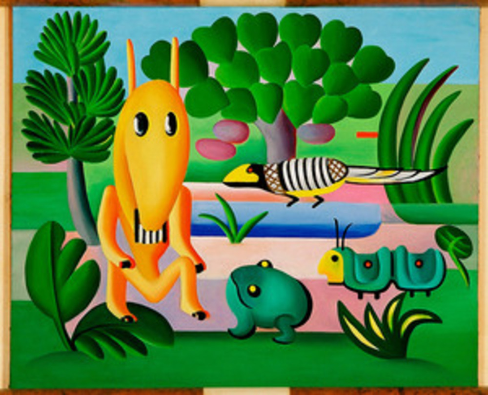
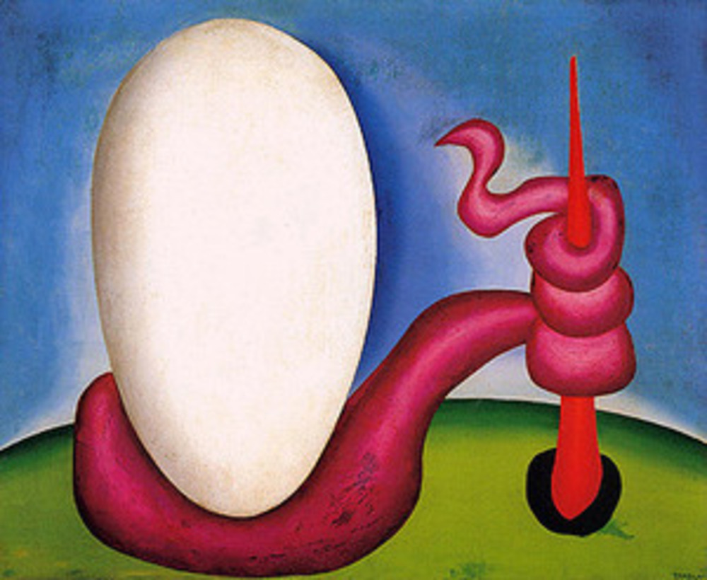

A pintura "Abaporu" de Tarsila do Amaral é uma das obras mais icônicas do movimento modernista brasileiro. Criada em 1928, "Abaporu" representa um marco significativo na arte brasileira e é considerada uma obra-prima do modernismo. Aqui estão detalhes sobre a pintura "Abaporu" de Tarsila do Amaral:
Estilo Artístico: "Abaporu" é uma representação exemplar do estilo modernista de Tarsila do Amaral. O modernismo brasileiro buscava romper com as tradições acadêmicas da arte e explorar novas formas de expressão, ao mesmo tempo em que valorizava elementos da cultura brasileira.
Tema e Significado: A pintura "Abaporu" retrata uma figura que não é possível identificar o sexo, essa figura é estilizada e alongada, deitada em uma paisagem desértica. A figura tem características simplificadas e é quase abstrata. Ao lado da figura, há uma cesta de flores. O nome "Abaporu" vem do tupi-guarani e significa "o homem que come" ou "o homem que come gente". Essa escolha sugere uma conexão entre a figura e a terra, destacando a importância da identidade e da ligação com a terra natal.
Elementos Abstratos: "Abaporu" apresenta elementos abstratos e geométricos. A figura humana é alongada e estilizada, enquanto a paisagem é simplificada em tons terrosos e amarelos. Essa estilização contribui para a atmosfera única da obra.
Importância: "Abaporu" é uma das obras mais reconhecidas de Tarsila do Amaral e é amplamente considerada uma das pinturas mais importantes do modernismo brasileiro. A obra representa a fusão de influências europeias e elementos da cultura indígena brasileira, destacando a busca por uma identidade artística e cultural brasileira genuína.
Legado Duradouro: "Abaporu" deixou um legado duradouro na arte brasileira e internacional. A pintura continua a ser admirada e estudada, e Tarsila do Amaral é frequentemente lembrada como uma das figuras mais importantes do movimento modernista no Brasil.
"Em resumo, "Abaporu" de Tarsila do Amaral é uma das obras mais emblemáticas do modernismo brasileiro, caracterizada por seu estilo modernista, influências surrealistas e elementos abstratos. A pintura representa a busca por uma identidade artística brasileira e a fusão de influências culturais, tornando-se uma parte fundamental do patrimônio artístico e cultural do Brasil.
São Paulo

A pintura "São Paulo" de Tarsila do Amaral é outra obra notável que faz parte do movimento modernista brasileiro. Criada em 1924, "São Paulo" é uma expressão artística importante que representa a visão da artista sobre a cidade em um período de grande transformação. Aqui estão detalhes sobre a pintura "São Paulo" de Tarsila do Amaral:
Estilo Artistíco: "São Paulo" incorpora o estilo modernista distintivo de Tarsila do Amaral. O modernismo brasileiro buscava romper com as tradições acadêmicas da arte e explorar novas formas de expressão, ao mesmo tempo em que valorizava elementos da cultura brasileira.
Tema urbano: A pintura "São Paulo" é uma representação abstrata da cidade de São Paulo na década de 1920. A cidade estava em rápido crescimento e passava por mudanças urbanísticas e industriais significativas. Tarsila do Amaral capturou essa transformação em sua obra, usando elementos abstratos e geométricos para representar edifícios, ruas e figuras humanas.
Elementos Abstratos: "São Paulo" apresenta uma variedade de formas geométricas, incluindo prédios estilizados e cores vibrantes. Tarsila do Amaral usa uma paleta de cores ousada e contrastante para criar uma representação visualmente cativante da cidade.
Nome e Significado: O título "São Paulo" é direto e descritivo, indicando o tema da obra. No entanto, a pintura não busca representar a cidade de forma realista, mas sim transmitir uma sensação geral da energia, crescimento e modernização que São Paulo estava experimentando naquela época.
Importância: "São Paulo" é uma obra que reflete a visão da artista sobre a cidade que estava se tornando um importante centro urbano e industrial do Brasil. A obra destaca o compromisso de Tarsila do Amaral com a representação das transformações em curso na sociedade brasileira e sua capacidade de traduzir essas mudanças em uma linguagem artística modernista.
Em resumo, "São Paulo" de Tarsila do Amaral é uma representação significativa do movimento modernista brasileiro, que enfoca o tema urbano e as transformações da cidade. A pintura é uma expressão artística que captura a dinâmica e a evolução da cidade de São Paulo na década de 1920, destacando a habilidade da artista em criar obras que refletem as mudanças sociais e culturais de seu tempo.
Operários

A pintura "Operários" de Tarsila do Amaral é uma obra icônica do movimento modernista brasileiro. Criada em 1933, a pintura "Operários" reflete as características e a importância desse período artístico no contexto do Brasil. Aqui estão detalhes sobre a pintura "Operários" de Tarsila do Amaral:
Estilo Artístico:"Operários" incorpora o estilo modernista que caracteriza a obra de Tarsila do Amaral. O modernismo brasileiro buscava romper com as tradições acadêmicas da arte e explorar novas formas de expressão, ao mesmo tempo em que valorizava elementos da cultura brasileira.
Tema Social: A pintura "Operários" é um exemplo da inclinação da artista para temas sociais. A obra retrata operários em seu ambiente de trabalho, possivelmente em uma fábrica ou canteiro de construção. As figuras humanas são estilizadas e geométricas, refletindo uma abordagem modernista à representação da classe trabalhadora.
Elementos Abstratos: Assim como em outras obras modernistas, "Operários" apresenta elementos abstratos e simplificados. Tarsila do Amaral usa formas geométricas e cores contrastantes para criar uma representação visualmente impactante da dureza e da monotonia do trabalho industrial.
Nome e Significado:O título "Operários" é descritivo e direto, indicando o tema da obra. A pintura não busca representar uma história específica ou individualizar os operários, mas sim transmitir uma sensação geral das condições de trabalho da classe operária na época.
Importância:"Operários" é uma obra que reflete o compromisso de Tarsila do Amaral com questões sociais e culturais de seu tempo. Durante a década de 1930, o Brasil estava passando por um período de industrialização e urbanização, e a classe trabalhadora estava se expandindo. A obra captura essas transformações sociais e econômicas.
Em resumo, "Operários" de Tarsila do Amaral é uma representação significativa do movimento modernista brasileiro. Ela enfoca questões sociais e culturais, incorporando elementos abstratos para transmitir a experiência da classe trabalhadora durante o processo de industrialização. A obra destaca a capacidade da artista de usar sua arte como meio de reflexão sobre as mudanças em curso na sociedade brasileira no início do século XX.
Cuca

A obra "Cuca" de Tarsila do Amaral é outra peça significativa no contexto do movimento modernista brasileiro. Criada em 1924, "Cuca" reflete as características marcantes desse período artístico. Aqui estão detalhes sobre a pintura "Cuca" de Tarsila do Amaral:
Estilo Artístico:"Cuca" é uma representação típica do estilo modernista de Tarsila do Amaral. O modernismo brasileiro buscava romper com as tradições acadêmicas da arte, incorporando elementos da cultura brasileira e influências das vanguardas europeias.
Influência Abstrata e Geométrica:A obra "Cuca" apresenta formas geométricas e abstratas que caracterizam o estilo modernista. Tarsila do Amaral usa uma paleta de cores vibrantes e contrastantes, como o vermelho e o amarelo, para criar uma composição visualmente cativante.
Nome e Significado:O nome "Cuca" não se refere diretamente à figura lendária da Cuca do folclore brasileiro. A pintura é uma criação abstrata da artista e não pretende representar a figura mitológica. O nome pode ser usado de forma mais simbólica ou associativa, e a obra em si é uma expressão artística livre de interpretações literais.
Importância: "Cuca" é uma obra significativa na carreira de Tarsila do Amaral, representando sua habilidade de fundir influências estrangeiras com elementos da cultura brasileira. Ela desempenhou um papel crucial na construção da identidade artística brasileira e contribuiu para a afirmação do modernismo no país.
Em resumo, "Cuca" de Tarsila do Amaral é uma obra modernista que se destaca pela sua abstração geométrica e uso ousado das cores. Apesar do nome evocar a figura lendária da Cuca, a pintura não a representa literalmente, mas é uma expressão artística abstrata e simbólica. Ela permanece como um exemplo importante da inovação e busca por uma identidade artística brasileira no início do século XX.
Urutu ou Ovo

A pintura "Urutu" de Tarsila do Amaral é uma obra de arte que faz parte do movimento modernista brasileiro. Criada em 1928, a obra é uma das mais emblemáticas do período e é conhecida por suas características modernistas e influências surrealistas. Aqui estão mais detalhes sobre a pintura "Urutu" de Tarsila do Amaral:
Estilo Artístico:"Urutu" reflete o estilo modernista característico de Tarsila do Amaral. Ela foi uma das artistas mais importantes desse movimento no Brasil, que buscava romper com as tradições acadêmicas da arte e explorar novas formas de expressão. O modernismo brasileiro tinha como objetivo criar uma linguagem artística genuinamente brasileira.
Influências Surrealistas:A pintura "Urutu" mostra a influência do movimento surrealista europeu, que estava em voga na época. O surrealismo valorizava o inconsciente e a imaginação, resultando em representações artísticas que frequentemente desafiavam a lógica e a realidade objetiva. "Urutu" exibe elementos surreais, como a combinação de formas abstratas e orgânicas, que conferem à obra uma qualidade onírica e enigmática.
Elementos Abstatos e Simbólicos:A pintura apresenta formas geométricas e orgânicas estilizadas, incluindo uma figura humana alongada e distorcida, bem como elementos que se assemelham a serpentes, que podem ser associados ao nome "Urutu". A combinação desses elementos forma uma composição complexa e aberta à interpretação.
Nome e Significado:O nome "Urutu" é uma referência à cobra venenosa encontrada na América do Sul. No entanto, a obra não representa literalmente uma cobra, mas simbolicamente evoca uma atmosfera misteriosa e inquietante, típica do surrealismo.
Importância:"Urutu" é considerada uma das obras mais significativas de Tarsila do Amaral e um exemplo notável do modernismo brasileiro. Ela representa a capacidade da artista de sintetizar influências estrangeiras com elementos da cultura brasileira, contribuindo para a formação de uma identidade artística nacional.
Em resumo, a pintura "Urutu" de Tarsila do Amaral é uma obra icônica do modernismo brasileiro, caracterizada por seu estilo modernista, influências surrealistas e elementos abstratos. Ela permanece como um marco importante na história da arte brasileira, exemplificando a inovação e a busca por uma expressão artística verdadeiramente brasileira no início do século XX.